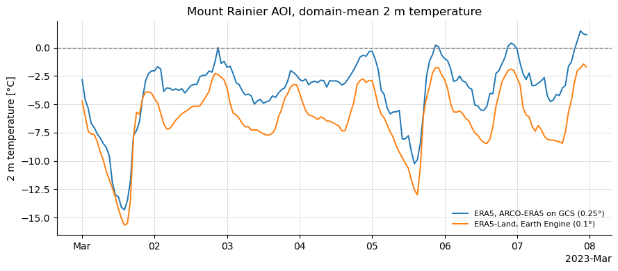
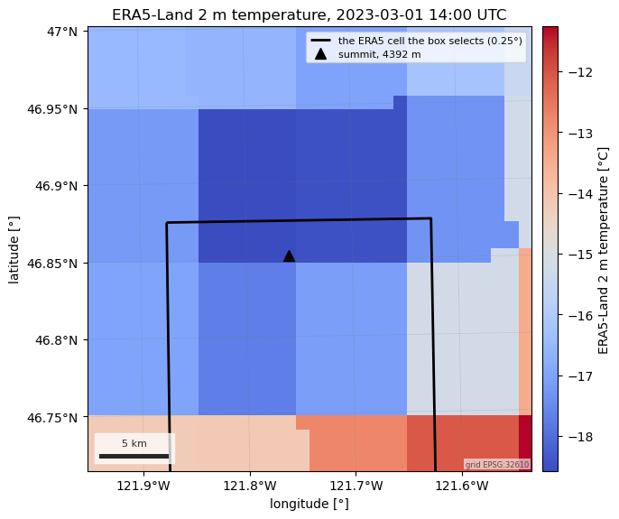

Note
Go to the end to download the full example code.
ERA5 reanalysis (ARCO-ERA5 and Earth Engine)#
ERA5 is ECMWF’s global reanalysis: hourly fields on a 0.25° grid from 1940 to about a week ago, with the last three months served as the preliminary ERA5T. ERA5-Land re-runs the land surface at 0.1° with the same forcing. Both are the usual source of temperature and precipitation for a basin without a station.
Two routes. The default, arco-era5-gcs, is Google’s analysis-ready Zarr
copy of hourly ERA5 on Cloud Storage: anonymous, no account, lazy. Everything
else, ERA5-Land and the daily and monthly aggregates, lives on Earth Engine
(source="gee") and needs Earth Engine credentials.
The figures put one week of 2 m temperature from both routes on one calendar axis, then map the ERA5-Land grid at its coldest hour to show what a reanalysis cell is: this 40 km box selects a single 0.25° ERA5 cell, and its temperature is that of the cell’s average elevation, not of a summit.
AOI(bounds=(-121.9400, 46.7200, -121.5400, 46.9900), clip=True)
Where the product comes from, and what each route asks for.
for src in esd.catalog.get("era5").sources:
print(f"{src.id:22} {src.title:45} {', '.join(src.requires) or 'no account'}")
arco-era5-gcs ARCO-ERA5 (GCS) no account
gee Earth Engine earthengine
The credential-free route: one week of hourly 2 m temperature and snow depth
from ARCO-ERA5. The result is Dask-backed with time, latitude,
longitude dims, and the subset holds the native cells whose centres fall
in the box: at 0.25° that is a single cell here.
era5_ds = esd.climate.era5.load(aoi, week, variables=["2m_temperature", "snow_depth"])
print(era5_ds)
<xarray.Dataset> Size: 3kB
Dimensions: (time: 168, latitude: 1, longitude: 1)
Coordinates:
* time (time) datetime64[ns] 1kB 2023-03-01 ... 2023-03-07T23:00:00
* latitude (latitude) float32 4B 46.75
* longitude (longitude) float32 4B -121.8
spatial_ref int64 8B 0
Data variables:
2m_temperature (time, latitude, longitude) float32 672B dask.array<chunksize=(24, 1, 1), meta=np.ndarray>
snow_depth (time, latitude, longitude) float32 672B dask.array<chunksize=(24, 1, 1), meta=np.ndarray>
Attributes: (12/16)
valid_time_start: 1940-01-01
valid_time_stop: 2026-06-30
valid_time_stop_era5t: 2026-09-17
last_updated: 2026-09-23 04:03:12.749500+00:00
source: arco-era5-gcs
source_id: arco-era5-gcs
... ...
data_citation: Hersbach, H., et al. (2020). The ERA5 global rean...
license: Copernicus licence
easysnowdata_version: 0.3.3.dev19+gde94f7b3f
doi: 10.1002/qj.3803
version: ERA5
cadence: hourly
The same week from ERA5-Land on Earth Engine. ERA5-Land names the variable
temperature_2m and resolves the box into 4 x 5 cells at 0.1°.
land_ds = esd.climate.era5.load(
aoi, week, variables=["temperature_2m"], source="gee", version="ERA5_LAND"
)
print(land_ds)
<xarray.Dataset> Size: 15kB
Dimensions: (time: 168, latitude: 4, longitude: 5)
Coordinates:
* time (time) datetime64[ms] 1kB 2023-03-01 ... 2023-03-07T23:00:00
* latitude (latitude) float64 32B 47.0 46.9 46.8 46.7
* longitude (longitude) float64 40B -121.9 -121.8 -121.7 -121.6 -121.5
spatial_ref int64 8B 0
Data variables:
temperature_2m (time, latitude, longitude) float32 13kB dask.array<chunksize=(48, 4, 5), meta=np.ndarray>
Attributes: (12/13)
collection: ECMWF/ERA5_LAND/HOURLY
source: gee
source_id: gee
source_title: Earth Engine
source_url: https://developers.google.com/earth-engine/dataset...
product_id: era5
... ...
data_citation: Hersbach, H., et al. (2020). The ERA5 global reana...
license: Copernicus licence
easysnowdata_version: 0.3.3.dev19+gde94f7b3f
doi: 10.1002/qj.3803
version: ERA5_LAND
cadence: hourly
Domain means in degrees Celsius, on one axis. timeseries labels the y
axis from the array’s long_name and units attrs, so set them after
the conversion.
def domain_mean_celsius(temperature_da):
mean_da = (temperature_da.mean(dim=["latitude", "longitude"]) - 273.15).compute()
mean_da.attrs = {"long_name": "2 m temperature", "units": "°C"}
return mean_da
t2m_da = xr.concat(
[
domain_mean_celsius(era5_ds["2m_temperature"]),
domain_mean_celsius(land_ds["temperature_2m"]),
],
dim=pd.Index(
["ERA5, ARCO-ERA5 on GCS (0.25°)", "ERA5-Land, Earth Engine (0.1°)"],
name="source",
),
)
ax = esd.plotting.timeseries(
t2m_da, title="Mount Rainier AOI, domain-mean 2 m temperature"
)
ax.axhline(0, color="0.5", linestyle="--", linewidth=1)
ax.figure.tight_layout()

ERA5-Land runs a degree or two colder here because its 0.1° cells sit higher on average than the one 0.25° ERA5 cell the box selects; neither is a summit temperature. The map of the coldest hour shows the twenty ERA5-Land cells, the single ERA5 cell outlined, and the summit marked. The cells are geographic; the map is drawn on the AOI’s UTM grid at 1 km with nearest resampling, which keeps every cell a sharp block, and the outline and the summit are reprojected the same way.
coldest = pd.Timestamp(t2m_da.sel(source=t2m_da["source"][1]).idxmin("time").item())
coldest_da = (land_ds["temperature_2m"].sel(time=coldest) - 273.15).compute()
coldest_da.attrs = {"long_name": "ERA5-Land 2 m temperature", "units": "°C"}
grid = box.to_geobox(crs="utm", resolution=1000)
ax = esd.plotting.map(
coldest_da.odc.reproject(grid, resampling="nearest"),
cmap="coolwarm",
title=f"ERA5-Land 2 m temperature, {coldest:%Y-%m-%d %H:%M} UTC",
)
lon, lat = float(era5_ds["longitude"].item()), float(era5_ds["latitude"].item())
cell = gpd.GeoSeries(
[shapely.box(lon - 0.125, lat - 0.125, lon + 0.125, lat + 0.125)], crs="EPSG:4326"
).to_crs(grid.crs)
cell.boundary.plot(
ax=ax, color="black", linewidth=2, label="the ERA5 cell the box selects (0.25°)"
)
summit = gpd.GeoSeries([shapely.Point(-121.7603, 46.8523)], crs="EPSG:4326").to_crs(
grid.crs
)
ax.plot(
summit.x.iloc[0],
summit.y.iloc[0],
marker="^",
color="black",
markersize=9,
linestyle="none",
label="summit, 4392 m",
)
ax.legend(fontsize=8, loc="upper right")
ax.figure.tight_layout()

Provenance travels with the data: which route served it, the citation and
licence, and where final ERA5 ends and preliminary ERA5T begins in the ARCO
store. A request that reaches past valid_time_stop gets era5t_from.
for key in (
"source",
"product_id",
"license",
"valid_time_stop",
"valid_time_stop_era5t",
):
print(f"{key}: {era5_ds.attrs[key]}")
source: arco-era5-gcs
product_id: era5
license: Copernicus licence
valid_time_stop: 2026-06-30
valid_time_stop_era5t: 2026-09-17
Total running time of the script: (0 minutes 7.070 seconds)